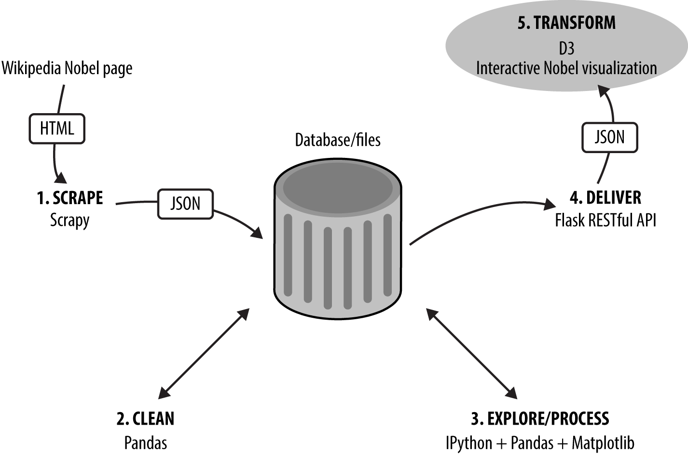

The Dataviz Toolchain
Transforming the data

The Great Namespace Flattening
// v3 ↦ v4
d3.geo.equirectangular ↦ d3.geoEquirectangular
d3.geo.conicEqualArea ↦ d3.geoConicEqualArea
d3.geo.path ↦ d3.geoPath
// etc..
The Update Pattern in Action
// 1. JOIN MAP DATA TO THE COUNTRY PATHS USING THE NAME KEY
var countries = svg.select('.countries').selectAll('.country')
.data(mapData, function(d) {
return d.name;
});
The Update Pattern in Action
// 3. ENTER AND APPEND NEW COUNTRIES USING UNBOUND DATA
countries.enter()
.append('path')
.attr('class', 'country')
.on('mouseenter', function(d) {
// console.log('Entered ' + d.name);
d3.select(this).classed('active', true);
})
.on('mouseout', function(d) {
// console.log('Left ' + d.name);
d3.select(this).classed('active', false);
})
// 4. MERGE ANY DATA-BOUND COUNTRIES BACK
.merge(countries)
// 5. UPDATE ALL BOUND COUNTRIES, NEWLY APPENDED AND OLD
.attr('name', function(d) {
return d.name;
})
.classed('visible', true)
.transition().duration(nbviz.TRANS_DURATION)
.style('opacity', 1)
.attr('d', function(d) {
return path(d.geo);
});
// 6. REMOVE ANY UNBOUND COUNTRIES
countries.exit()
.classed('visible', false)
.transition().duration(nbviz.TRANS_DURATION)
.style('opacity', 0);
The Update Pattern in Action
v3 ↦ v4
// v3
countries.enter()
.append()
// ...
;
// reuse selector, now magically containing newly appended
// and first selected elements
countries.attr("name", function(d) {
// ...
// v4
countries.enter()
.append()
// ...
.merge(countries) // merge appended with original selection